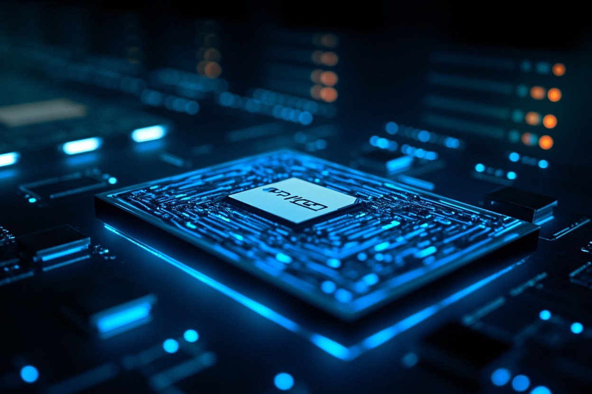

全球AI算力已有一半投入推論，Agentic AI崛起重新定義資料中心三層架構

AMD 董事長蘇姿豐在年度 Advancing AI 活動中揭示：全球 AI 算力已有一半以上用於推論，代表 AI 正從模型訓練轉向實際部署階段。Agentic AI 的崛起正在重新拉升 CPU 需求，其成長速度甚至超越 GPU，2030 年全球 AI 加速器市場規模將上看 1.4 兆美元。
全球 AI 運算首次有超過一半投入推論，而非模型訓練。生成式 AI 發展初期市場競爭多集中在建立更大模型，但隨著企業開始大規模部署 AI 服務，推論已逐漸成為主要工作負載，代表 AI 正從研發階段走向實際應用。
Agent 不只是回答問題，而是能持續執行一連串工作。除需要 GPU 完成模型推論外，也需要 CPU 負責執行程式碼、管理記憶體與系統狀態、呼叫 API、存取資料庫，以及協調多個工具與工作流程。蘇姿豐表示，非推論工作負載快速增加，使 CPU 需求成長速度甚至超過 GPU。
AMD 提出三層 AI 資料中心架構：第一層 AI Host Node（驅動 GPU）、第二層 Agent Sandbox（執行 Agent、協調工具呼叫）、第三層通用伺服器（執行資料庫及企業應用）。對應推出三種 EPYC Venice 處理器版本：GPU Host 高時脈版本、Agent 部署 256 核心版本、企業應用 128 核心版本。
Helios 機櫃整合 MI455 GPU、EPYC Venice 處理器、Pensando 網路及 ROCm 軟體平台，在產品設計初期便與 OpenAI、Meta 及 Anthropic 共同開發（co-develop）。蘇姿豐表示，未來 AI 資料中心的競爭是整體系統整合能力，而非只是 GPU 效能。
「GPU 與 AI 加速器的需求確實十分強勁，但是從市場規模的成長速度來看，CPU 其實更快。AI 仍處於非常早期的階段，每幾個月就會出現新的重大突破。」
— 蘇姿豐，AMD 董事長暨執行長AI 從模型訓練走向推論部署，是產業成熟的重要標誌。Agentic AI 的崛起預示了下一波成長方向——能自主規劃、執行複雜任務的 AI 代理。這種轉變重新定義了資料中心的運算架構，CPU 的重要性被重新審視。AMD 提出的三層架構反映晶片廠商對未來 AI 基礎設施的佈局思路，從單一晶片走向整體系統整合。
| 對比維度 | 傳統 AI 部署 | Agentic AI 時代 |
|---|---|---|
| 主要工作負載 | 模型訓練 + 簡單推論 | 複雜推論 + 任務執行 |
| GPU 角色 | 核心運算單元 | 模型推論專用加速 |
| CPU 角色 | 輔助管理 | 任務協調、程式執行、記憶體管理 |
| 資料中心架構 | GPU 為中心 | 三層分工（Host / Agent Sandbox / 通用） |